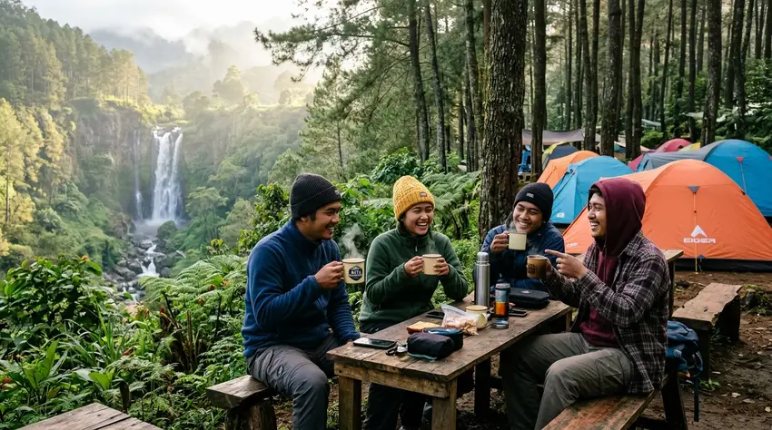

Tempat kemah air terjun terbaik di Batu bergantung pada kebutuhan: Coban Talun dan Coban Rais cocok untuk camping, sedangkan Coban Rondo unggul untuk wisata keluarga.
Ringkasan Inti
- Batu berada di dataran tinggi dengan udara sejuk, sehingga banyak coban (air terjun) memiliki area kemah di sekitarnya.
- Pilihan yang paling sering dibahas pengunjung adalah Coban Talun, Coban Rais, Coban Rondo, dan Coban Putri.
- Pilih lokasi berdasarkan akses, fasilitas, keamanan lahan, dan jenis rombongan, bukan hanya dari foto.
- Musim hujan, yang umumnya dimulai sekitar November, menuntut kewaspadaan tinggi terhadap debit air dan tanah licin.
- Harga tiket, jam buka, dan aturan kemah dapat berubah, jadi konfirmasi ke pengelola sebelum berangkat.
Apa Itu Tempat Kemah Air Terjun di Batu?
Tempat kemah air terjun di Batu adalah area camping resmi atau semi-resmi yang berlokasi dekat coban di kawasan Kota Batu dan sekitarnya, Jawa Timur.
Area ini biasanya berupa lahan datar di hutan pinus atau lereng bukit yang dikelola pihak desa, Perhutani, atau pengelola wisata swasta. Pengunjung membawa tenda sendiri atau menyewa tenda, lalu menikmati suara air terjun, udara dingin, dan suasana hutan.
Tempat kemah jenis ini cocok untuk pemula, keluarga, komunitas pecinta alam, dan rombongan kampus. Manfaatnya meliputi suasana tenang, akses relatif dekat dari kota, dan biaya yang umumnya lebih rendah daripada penginapan. Batasannya adalah cuaca yang cepat berubah, fasilitas yang bervariasi, dan risiko lahan licin atau banjir kiriman bila hujan turun di hulu.
Mengapa Batu Cocok untuk Berkemah di Dekat Air Terjun?
Batu cocok untuk berkemah karena berada di dataran tinggi lereng Gunung Arjuno-Welirang dengan udara sejuk, hutan pinus, dan banyak coban yang mudah dijangkau kendaraan.
Secara umum, wilayah Kota Batu berada pada ketinggian sekitar 700 hingga 1.700 meter di atas permukaan laut (gambaran umum wilayah dari data pemerintah daerah, rujukan publikasi hingga 2025). Ketinggian ini membuat suhu harian umumnya berkisar belasan hingga sekitar 25 derajat Celsius dan terasa lebih dingin pada malam hari (klimatologi umum rujukan BMKG, pola tahunan 2020 hingga 2025). Angka ini dapat bervariasi menurut titik lokasi dan musim.
Selain iklim, Batu memiliki infrastruktur wisata yang matang. Jalur kendaraan, warung, dan penyewaan alat camping mudah ditemukan di sekitar kawasan wisata. Bagi pemula, kombinasi udara sejuk dan akses mudah mengurangi risiko dibanding kemah di gunung tinggi.
Apa Saja Pilihan Tempat Kemah Air Terjun di Batu?
Pilihan yang paling sering dibahas pengunjung adalah Coban Talun, Coban Rais, Coban Rondo, dan Coban Putri, dengan karakter, akses, dan fasilitas yang berbeda satu sama lain. Informasi berikut bersifat umum. Fasilitas, tarif, dan kebijakan kemah dapat berubah, sehingga konfirmasi ke pengelola tetap diperlukan.
Bagaimana Karakter Coban Talun sebagai Tempat Kemah?
Coban Talun dikenal sebagai kawasan wisata alam di wilayah Batu dengan area hutan pinus dan jalur jalan kaki yang cukup berkesan. Lokasi ini sering dipilih pengunjung yang menginginkan suasana hutan yang rimbun. Medannya relatif menanjak dan licin saat hujan, sehingga alas kaki yang baik sangat disarankan.
Bagaimana Karakter Coban Rais sebagai Tempat Kemah?
Coban Rais berada di kawasan wana wisata di Batu dan populer untuk camping karena suasananya yang asri. Pengunjung biasanya memadukan kemah dengan jalan kaki menuju air terjun. Seperti kawasan hutan lain, kabut dan kelembapan tinggi membuat tenda dan pakaian mudah lembap.
Bagaimana Karakter Coban Rondo sebagai Tempat Kemah?
Coban Rondo berada di wilayah Pujon, Kabupaten Malang, yang berbatasan dengan Batu. Air terjun ini sering dikutip memiliki tinggi sekitar 84 meter (informasi umum dari pengelola dan publikasi wisata, rujukan hingga 2025). Kawasan ini punya fasilitas wisata keluarga yang lengkap dan area camping yang dikelola, sehingga cocok untuk pengunjung yang mengutamakan kenyamanan.
Bagaimana Karakter Coban Putri sebagai Tempat Kemah?
Coban Putri adalah air terjun di kawasan Batu yang kerap dikaitkan dengan suasana tenang dan pemandangan hijau. Bagi sebagian pengunjung, lokasi ini menarik karena ramai wisatawan lebih terkendali pada hari biasa. Periksa dahulu ke pengelola apakah camping diizinkan pada jadwal yang direncanakan.

Suasana santai berkemah di tengah hutan pinus rimbun dekat aliran air terjun alami Kota Batu.
Bagaimana Cara Membandingkan Tempat Kemah Air Terjun di Batu?
Bandingkan tempat kemah air terjun di Batu dengan lima parameter: akses jalan, fasilitas dasar, keamanan lahan, kapasitas rombongan, dan kebijakan pengelola.
Berikut parameter yang dapat dipakai sebagai daftar periksa saat menilai Coban Talun, Coban Rais, Coban Rondo, atau Coban Putri:
| Parameter | Hal yang Perlu Dicek |
|---|---|
| Akses jalan | Kondisi jalan, jarak parkir ke area tenda, dan jalur pejalan kaki |
| Fasilitas dasar | Toilet, air bersih, musala, warung, listrik, dan area api unggun |
| Keamanan lahan | Jarak tenda dari aliran sungai, kemiringan, dan risiko pohon tumbang |
| Kapasitas | Jumlah tenda yang diizinkan dan kebijakan rombongan besar |
| Kebijakan pengelola | Jam masuk, aturan musik, sampah, dan larangan tertentu |
Parameter ini memiliki batasan. Penilaian hanya akurat bila informasi pengelola terbaru. Foto di media sosial sering menampilkan kondisi musim kemarau, sedangkan kondisi musim hujan dapat sangat berbeda.
Kapan Waktu Terbaik Berkemah di Air Terjun Batu?
Waktu terbaik berkemah di air terjun Batu umumnya musim kemarau, sekitar Mei hingga September, karena debit air lebih stabil dan lahan tidak terlalu licin.
Musim hujan di sebagian besar wilayah Jawa Timur umumnya terjadi sekitar November hingga Maret (pola musim umum rujukan BMKG, pengamatan 2020 hingga 2025). Pengunjung perlu memeriksa prakiraan cuaca terbaru di situs BMKG pada https://www.bmkg.go.id sebelum memutuskan berangkat.
Hari kerja biasanya lebih sepi dibanding akhir pekan dan libur panjang. Untuk pemula, memilih hari kerja membuat proses pendirian tenda lebih santai dan pengelola lebih mudah membantu bila ada kendala.
Apa yang Perlu Disiapkan Sebelum Berkemah di Air Terjun?
Persiapan inti sebelum berkemah di air terjun mencakup tenda tahan air, pakaian hangat, penerangan, alat masak, obat pribadi, dan rencana darurat yang diketahui seluruh anggota rombongan.
Udara malam di dataran tinggi Batu terasa dingin dan lembap. Jaket, kaus kaki cadangan, dan sleeping bag yang sesuai suhu menjadi kebutuhan utama. Selain itu, bawa jas hujan, lampu kepala, power bank, dan kantong sampah. Penjelasan rinci tersedia pada panduan perlengkapan camping air terjun di Batu.
Persiapan non-fisik juga penting. Simpan nomor kontak pengelola, bagikan rencana perjalanan ke keluarga, dan tentukan titik kumpul bila rombongan terpisah.
Bagaimana Menjaga Keselamatan Saat Camping Dekat Air Terjun?
Keselamatan camping dekat air terjun dijaga dengan memilih lahan yang jauh dari aliran sungai, memantau cuaca, dan segera pindah ke tempat tinggi bila air mulai keruh atau naik.
Risiko utama adalah banjir kiriman, yaitu naiknya debit air akibat hujan di hulu meski langit di lokasi tampak cerah. Risiko lain meliputi tanah licin, pohon tumbang, dan hipotermia. Prosedur lengkapnya dibahas dalam artikel tips aman camping dekat air terjun di Batu.
Jangan berenang di kolam air terjun tanpa mengetahui kedalamannya dan jangan memanjat batu basah. Ikuti petunjuk petugas dan papan peringatan setempat.
Bagaimana Memilih Lokasi Kemah Sesuai Jenis Rombongan?
Pilih lokasi kemah sesuai jenis rombongan: keluarga membutuhkan fasilitas dan akses mudah, pemula membutuhkan area ramai yang diawasi, dan komunitas membutuhkan lahan luas.
Keluarga dengan anak kecil sebaiknya memilih area dengan toilet, air bersih, dan jalur pendek. Pecinta alam berpengalaman mungkin memilih lokasi lebih sunyi dengan fasilitas minim. Rombongan besar perlu memastikan kuota tenda dan aturan kebisingan.
Apa Kesalahan Umum Saat Berkemah di Air Terjun Batu?
Kesalahan umum berkemah di air terjun Batu meliputi mendirikan tenda terlalu dekat sungai, meremehkan dingin malam, tidak mengecek cuaca, dan meninggalkan sampah.
Berikut kesalahan yang paling sering terjadi:
- Mendirikan tenda di dasar sungai atau cekungan yang mudah tergenang air.
- Membawa pakaian katun yang lama kering saat lembap.
- Tidak membawa penerangan cadangan dan baterai tambahan.
- Mengabaikan aturan pengelola, termasuk jam malam dan larangan api di area tertentu.
- Membuang sampah makanan sembarangan sehingga mengundang hewan liar.
Menghindari kesalahan ini mengurangi risiko cedera dan menjaga hubungan baik dengan pengelola serta warga sekitar.
Bagaimana Menjaga Kelestarian Lokasi Kemah?
Menjaga kelestarian lokasi kemah berarti membawa pulang seluruh sampah, tidak merusak vegetasi, memakai sabun ramah lingkungan, dan menghormati aturan pengelola serta warga setempat.
Prinsip ini sejalan dengan etika Leave No Trace yang dikenal luas di kalangan pecinta alam. Hindari mencuci peralatan langsung di aliran air terjun, karena air tersebut sering dimanfaatkan warga di bagian hilir. Pemakaian botol minum isi ulang mengurangi sampah plastik yang menumpuk di kawasan wisata.
FAQ
Tidak semua air terjun di Batu mengizinkan camping. Kebijakan ditentukan pengelola, Perhutani, atau desa setempat. Konfirmasi langsung sebelum berangkat agar tidak ditolak di lokasi.
Suhu malam hari di dataran tinggi Batu umumnya lebih dingin daripada siang dan dapat turun hingga belasan derajat Celsius. Nilai pastinya bervariasi menurut lokasi dan musim, jadi siapkan pakaian hangat berlapis.
Camping di air terjun Batu relatif cocok untuk pemula bila memilih area yang dikelola, ramai, dan berfasilitas. Pemula tetap perlu memeriksa cuaca dan menghindari lahan dekat aliran sungai.
Boleh, dengan syarat lokasi memiliki fasilitas dasar dan jalur yang aman. Orang tua perlu mengawasi anak terus-menerus, terutama di sekitar air, serta menyiapkan pakaian hangat dan obat pribadi.
Reservasi disarankan pada akhir pekan dan libur panjang karena kuota tenda dapat terbatas. Hubungi pengelola untuk memastikan ketersediaan lahan, tarif, dan aturan terbaru sebelum berangkat.
Camping pada musim hujan memiliki risiko lebih tinggi, terutama banjir kiriman dan tanah licin. Bila hujan deras diperkirakan, tunda perjalanan atau pilih area yang jauh dari aliran sungai.